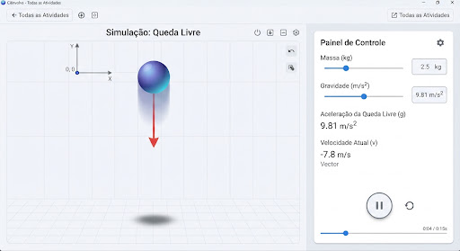

Experimento 01
timer
10 min • Prático
Física
Mecânica
Gravitação
Queda Livre e Gravidade
Analise a aceleração de corpos com massas variadas em vácuo e com resistência do ar em diferentes planetas.
signal_cellular_alt
Intermediário
Iniciar Simulação
arrow_forward